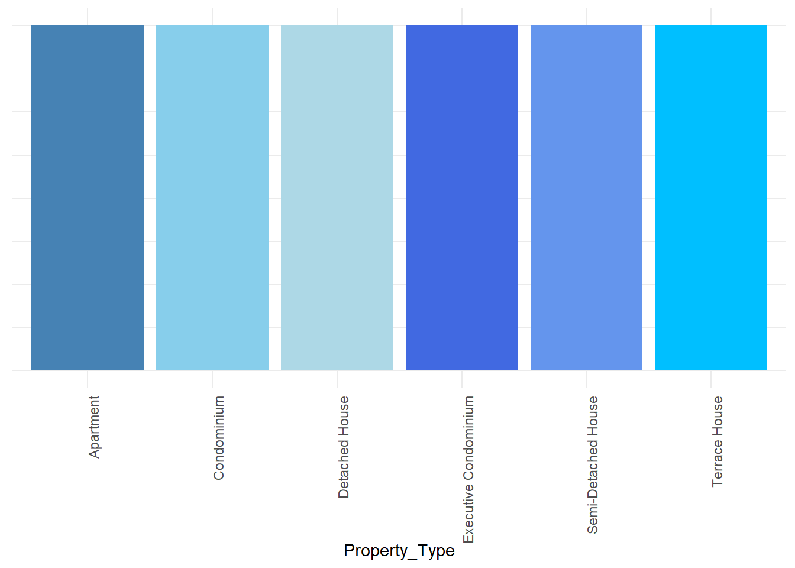
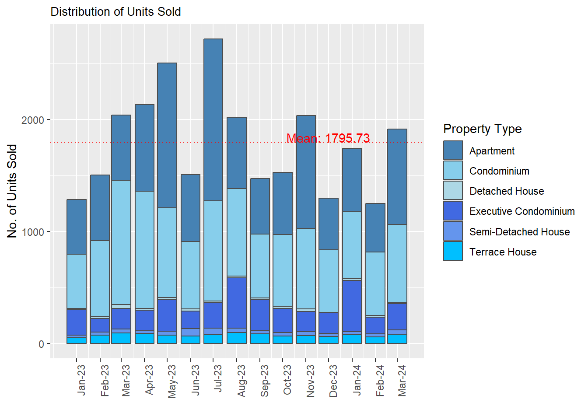
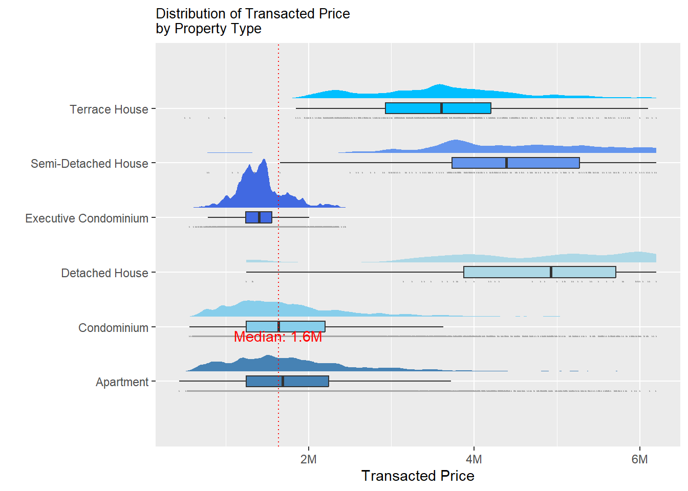
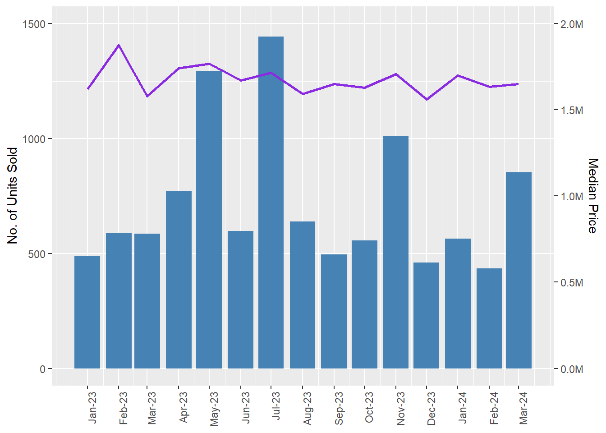
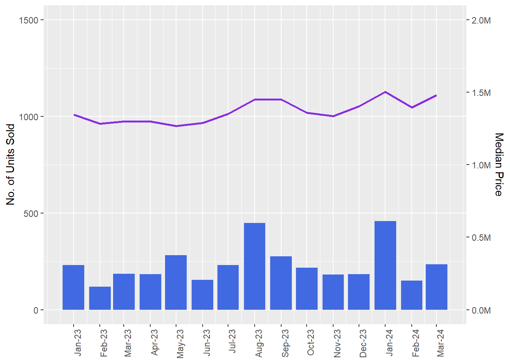
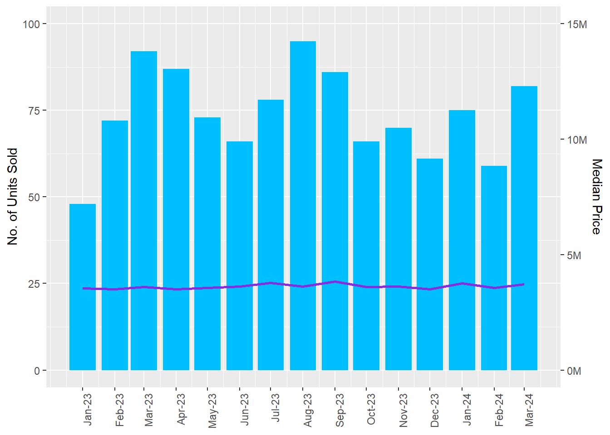
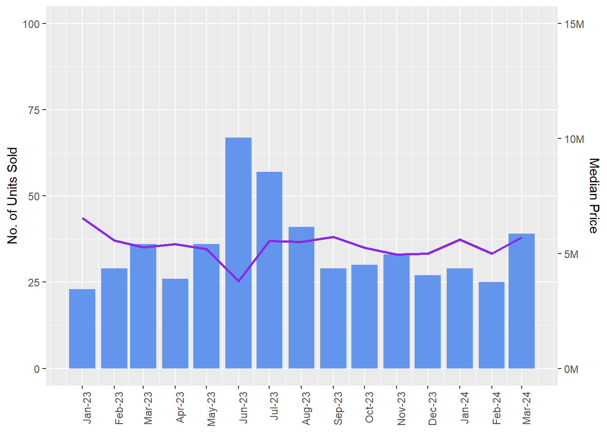
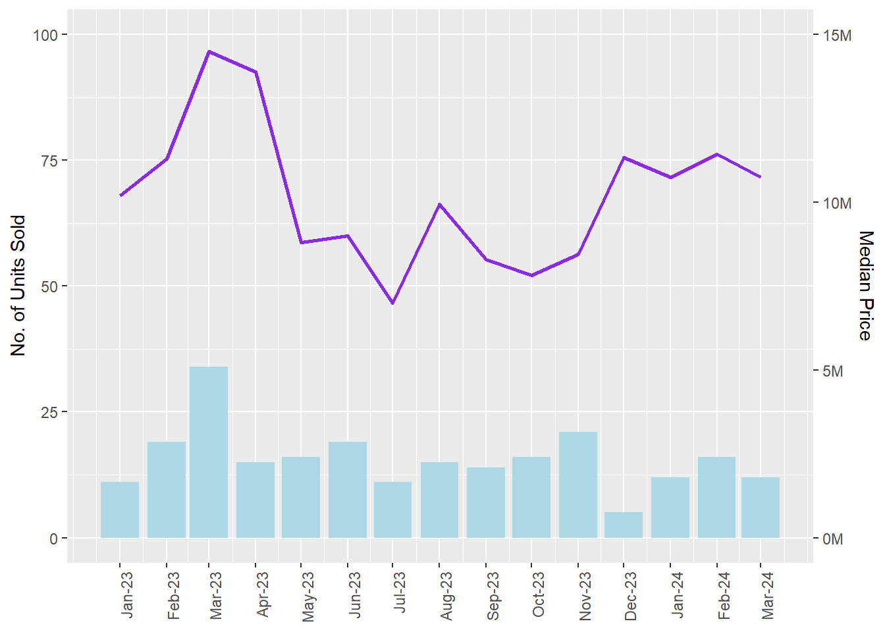
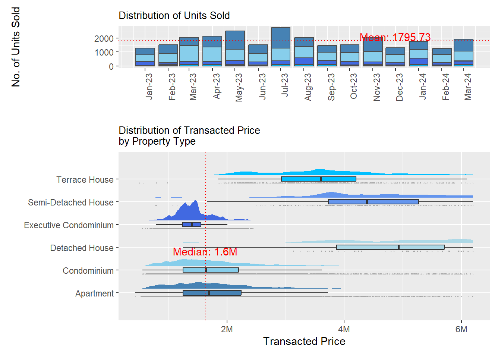
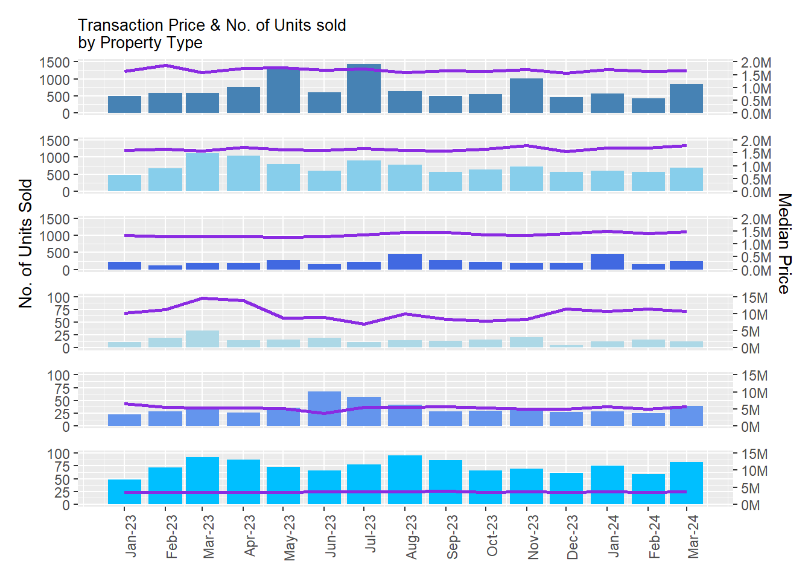

pacman::p_load(ggrepel, patchwork,
ggthemes, hrbrthemes,
tidyverse, readr, ggdist, ggridges, colorspace, knitr, forcats, reshape2, png, grid) Take-home Exercise 2 - DataVis Makeover
The Task
Select one data visualisation from the Take-home Exercise 1 submission prepared by a peer,
Critic the submission in terms of clarity and aesthetics,
Prepare a sketch for the alternative design by using the data visualisation design principles and best practices you had learned in Lesson 1 and 2.
Remake the original design by using ggplot2, ggplot2 extensions and tidyverse packages.
The Source
The visualisation of this critique is taken from fellow classmate Seng Jing Yi for learning purposes only, based on my interpretation of Prof Kam’s Designing Graphics to Enlighten.
Visualisation
In “Visualization 1 - How has transacted price varied over the 2024 Q1 and 2023”, the following plot is presented:

Aesthetics
| Pros | Cons |
|---|---|
|
|
Clarity
| Pros | Cons |
|---|---|
|
|
Alternative Design
Aesthetics
| Identified Areas for Improvement | Proposed Solutions |
|---|---|
|
|
Clarity
| Identified Areas for Improvement | Proposed Solutions |
|---|---|
|
|
Sketch
Getting Started
Jingyi’s method for data wrangling will be used in order to keep the plots consistent.
Installing and loading the required libraries
Note: Ensure that the pacman package has already been installed.
The code chunk below loads the following packages using uses p_load() of pacman package:
| tidyverse |
|
ggdist ggridges ggrepel ggthemes & hrbrthemes |
|
| patchwork | For combination and alignment of multiple plots for each visualisation. |
| knitr | For elegant, flexible and fast report generation of underlying dataframes. |
Importing the Data
The data has been split into multiple .csv files
They will be loaded seperately, then bound together using
rbind.
realis_1 <- read_csv("data/ResidentialTransaction20240308160536.csv")
realis_2 <- read_csv("data/ResidentialTransaction20240308160736.csv")
realis_3 <- read_csv("data/ResidentialTransaction20240308161009.csv")
realis_4 <- read_csv("data/ResidentialTransaction20240308161109.csv")
realis_5 <- read_csv("data/ResidentialTransaction20240414220633.csv")
realis_full <- rbind(realis_1, realis_2, realis_3, realis_4, realis_5)Summary of Data
summary() function used to obtain dataset min, max values and interquartile range.
| Transacted_Price | Area_SQFT | Unit_Price_PSF | Number_of_Units | |
|---|---|---|---|---|
| Min. : 440000 | Min. : 322.9 | Min. : 138 | Min. : 1.000 | |
| 1st Qu.: 1280000 | 1st Qu.: 721.2 | 1st Qu.:1384 | 1st Qu.: 1.000 | |
| Median : 1660000 | Median : 990.3 | Median :1762 | Median : 1.000 | |
| Mean : 2143286 | Mean : 1191.6 | Mean :1852 | Mean : 1.005 | |
| 3rd Qu.: 2320000 | 3rd Qu.: 1302.4 | 3rd Qu.:2260 | 3rd Qu.: 1.000 | |
| Max. :392180000 | Max. :144883.4 | Max. :5756 | Max. :60.000 |
# Understanding the distribution of numerical values in Realis
realis_num <- realis_full[,c("Transacted Price ($)", "Area (SQFT)", "Unit Price ($ PSF)", "Number of Units")]
realis_num <- realis_num %>%
rename("Transacted_Price" = "Transacted Price ($)") %>%
rename("Area_SQFT" = "Area (SQFT)") %>%
rename("Unit_Price_PSF" = "Unit Price ($ PSF)") %>%
rename("Number_of_Units" = "Number of Units")
kable(summary(realis_num))Data Processing
Manual Data Correction for Incorrect Data Entry
Re-labelling was performed for a visibly wrong record. (e.g.,
Completion Yearfor “The Hiller” should be 2011 instead of 0216) and this was cross-checked with industry sources.Referencing “Property Guru”, the property sold can be grouped into Central Core Region, Rest of Central Region and Outside of Central Region (CCR, RCR and OCR).
Hence, a new column of
Region_typewas created to reflect the 3 segmented zones based on classifying the existing values inPostal District.
# Encoding postal district into CCR, RCR and OCR
realis_full <- realis_full %>%
mutate(`Postal District` = as.numeric(`Postal District`)) %>%
mutate(Region_type = case_when(
`Postal District` %in% c(01, 02, 04, 06, 07, 09,10, 11) ~ "CCR",
`Postal District` %in% c(03, 05, 08, 12, 13, 14, 15, 20) ~ "RCR",
`Postal District` %in% c(16, 17, 18, 19, 21, 22, 23, 24, 25, 26, 27, 28) ~ "OCR"
))Reclassification of Postal District to Reflect Proximity to City Center
Postal Districtvalues were mapped toPlanning Areathat the public is familiar with.
| Planning Area | Distinct_Values |
|---|---|
| Ang Mo Kio | 28, 20, 26 |
| Bedok | 14, 15, 16 |
| Bishan | 20 |
| Bukit Batok | 23, 21 |
| Bukit Merah | 4, 3, 10, 2 |
| Bukit Panjang | 23, 21 |
| Bukit Timah | 10, 21, 11, 23 |
| Changi | 17 |
| Choa Chu Kang | 23 |
| Clementi | 5, 21 |
| Downtown Core | 1, 7, 2, 6 |
| Geylang | 14, 15, 13 |
| Hougang | 19, 28 |
| Jurong East | 22 |
| Jurong West | 22 |
| Kallang | 8, 12, 15, 7, 14 |
| Mandai | 27 |
| Marine Parade | 15 |
| Museum | 9 |
| Newton | 9, 10 |
| Novena | 11, 12, 9 |
| Orchard | 10, 9 |
| Outram | 3, 2, 1 |
| Pasir Ris | 18, 17 |
| Paya Lebar | 18 |
| Punggol | 19 |
| Queenstown | 3, 5, 10 |
| River Valley | 9, 10 |
| Rochor | 9, 8, 7 |
| Sembawang | 27 |
| Sengkang | 28, 19 |
| Serangoon | 19, 20, 28, 13 |
| Singapore River | 6, 3, 9, 1 |
| Southern Islands | 4 |
| Sungei Kadut | 25 |
| Tampines | 18, 16 |
| Tanglin | 10 |
| Tengah | 24 |
| Toa Payoh | 19, 13, 12, 20, 11 |
| Woodlands | 25 |
| Yishun | 27, 26 |
postal_mapping<- realis_full %>%
group_by(`Planning Area`) %>%
summarize(Distinct_Values = paste(unique(`Postal District`), collapse = ", "))
kable(postal_mapping, title = "Mapping of Planning Area to Postal District ")Standardisation
Large projects tend to spread across multiple postal codes, thus, a consistent postal code was assigned to each project. Revised postal code assigned is based on the highest frequency per project with the group_by() function.
# Re-assigning large projects to a common postal code. (highest frequency postal code) for standardisation.
realis_full <- realis_full %>%
group_by(`Project Name`) %>%
mutate(`Postal Code` = names(which.max(table(`Postal Code`)))) %>%
ungroup()Converting Tenure into Remaining Lease Life.
Converting
Tenureinto date format, excluding: “Freehold”, “99 or 999 years leasehold from uncompleted units”.Calculating the remaining lease life based on
Sale Date. (Rounded down to nearest no. of years)Re-labeling back the records which are “Freehold” and “99 or 999 years leasehold” for uncompleted units.
realis_clean <- realis_full %>%
rowwise() %>%
mutate(
years = as.numeric(str_extract(Tenure, "\\d+(?=\\s+yrs)")), # Extracts digits before " yrs" as years
start_date = dmy(str_extract(Tenure, "\\d{2}/\\d{2}/\\d{4}")), # Extracts date in "dd/mm/yyyy" format
end_date = start_date + years(years),
remaining_years = floor(as.numeric(difftime(end_date, Sys.Date(), units = "days") / 365)) # Calculate remaining years from days
) %>%
ungroup()
realis_clean2 <- realis_clean %>%
mutate(years_left = ifelse(!is.na(remaining_years), remaining_years,
ifelse(Tenure == "999 years leasehold", "999",
ifelse(Tenure == "99 years leasehold", "99",
ifelse(Tenure == "Freehold", "Freehold",
ifelse(Tenure == "110 yrs from 01/11/2017", "103",
ifelse(Tenure == "110 Yrs from 01/11/2017", "103", NA)))))))
# Converting character into date format
realis_clean2$`Sale Date` <- as.Date(realis_clean2$`Sale Date`, format = "%d %b %Y") Exploring outliers
Commercial En-bloc
The data set includes transactions that include commercial purchases that are infrequent and done by private developers for large land masses. This subset of transactions are unlikely to be done by individual buyers, and will be excluded from subsequent visualisation to prevent distortion of the axis.
Number of Units> 5Type of Sale= “Resale”Purchaser Address Indicator=“Private”Tenure= “Freehold”
| Project Name | Transacted_Price | Area_SQFT | Unit_Price_PSF | Sale_Date | Address | Type of Sale | Type of Area | Area (SQM) | Unit Price ($ PSM) | Nett Price($) | Property Type | Number_of_Units | Tenure | Completion Date | Purchaser Address Indicator | Postal Code | Postal District | Postal Sector | Planning Region | Planning Area | Region_type |
|---|---|---|---|---|---|---|---|---|---|---|---|---|---|---|---|---|---|---|---|---|---|
| BAGNALL COURT | 115280000 | 68491.33 | 1683 | 04 Jan 2023 | 813,817 ETC ENBLOC UPPER EAST COAST ROAD | Resale | Strata | 6363 | 18117 | - | Condominium | 43 | Freehold | 1991 | Private | 466609 | 16 | 46 | East Region | Bedok | OCR |
| MEYER PARK | 392180000 | 144883.44 | 2707 | 09 Feb 2023 | 81,83 ENBLOC MEYER ROAD #19-01,02 ETC | Resale | Strata | 13460 | 29137 | - | Condominium | 60 | Freehold | 1985 | Private | 437910 | 15 | 43 | Central Region | Marine Parade | RCR |
| KEW LODGE | 66800000 | 25177.00 | 2653 | 23 May 2023 | 34,34A,36 ETC ENBLOC KHEAM HOCK ROAD | Resale | Strata | 2339 | 28559 | - | Terrace House | 11 | Freehold | 1984 | Private | 298796 | 11 | 29 | Central Region | Novena | CCR |
| KARTAR APARTMENTS | 18000000 | 6964.31 | 2585 | 11 Oct 2023 | 41A,43 ETC ENBLOC THOMSON ROAD | Resale | Strata | 647 | 27821 | - | Apartment | 7 | Freehold | - | Private | 307583 | 11 | 30 | Central Region | Novena | CCR |
enbloc_set <- realis_full %>% filter(`Tenure` == "Freehold",
`Number of Units` > 5,
`Purchaser Address Indicator` == "Private",
`Type of Sale` == "Resale"
)
enbloc_set_2 <- enbloc_set %>%
rename("Transacted_Price" = "Transacted Price ($)") %>%
rename("Area_SQFT" = "Area (SQFT)") %>%
rename("Unit_Price_PSF" = "Unit Price ($ PSF)") %>%
rename("Sale_Date" = "Sale Date") %>%
rename("Number_of_Units" = "Number of Units")
kable(enbloc_set_2)Large new launches
Another subset identified are new project launches, where we observe a spike in transaction volumes in the month which new large developments are launched.
Type of Sale= “New Sale”Completion Date= “Uncompleted”Sum of
Number of Unitsgroup byProject Name> 100
| Project Name | proj_sale | median_proj_psf |
|---|---|---|
| THE RESERVE RESIDENCES | 679 | 2474.0 |
| GRAND DUNMAN | 641 | 2523.0 |
| LENTOR HILLS RESIDENCES | 487 | 2107.0 |
| N.A. | 486 | 2473.5 |
| LENTOR MANSION | 409 | 2269.0 |
| TEMBUSU GRAND | 389 | 2461.0 |
Sale_by_proj <- realis_full %>%
group_by(`Project Name`) %>%
mutate(total_sale = sum(`Number of Units`))%>%
arrange(desc(total_sale)) %>%
ungroup()
new_launch <- Sale_by_proj %>%
filter(`Type of Sale` == "New Sale",
`Completion Date` == "Uncompleted")
large_new_launch <- Sale_by_proj %>%
filter(`Type of Sale` == "New Sale",
`Completion Date` == "Uncompleted",
total_sale > 100)
large_new_launch <- large_new_launch %>%
rename("Unit_Price_PSF" = "Unit Price ($ PSF)")
new_proj_sale <- large_new_launch %>%
group_by(`Project Name`) %>%
summarize(proj_sale = total_sale,
median_proj_psf = median(as.numeric(`Unit_Price_PSF`))) %>%
arrange(desc(proj_sale))
kable(head(distinct(new_proj_sale)), n =5)Luxury market
Transactions with Transacted Price ($) in the top 2.5% are excluded in earlier price distribution visualisations as they skewed the records.
high_val <- realis_clean2 %>%
filter(`Transacted Price ($)` > quantile(`Transacted Price ($)`, 0.975, na.rm = TRUE))
ind_high_val <- anti_join(high_val, enbloc_set, by = c("Tenure","Number of Units","Type of Sale"))Visualisation
Diving into individual private residential purchases, the visualization data set used Realis_vis will exclude the subset of Enbloc_set.
realis_vis <- anti_join(realis_clean2, enbloc_set, by = c("Tenure","Number of Units","Type of Sale"))The following colours will be used for the subsequent visualisations:

# Define the property types and colors
prop_types <- c("Apartment", "Condominium", "Detached House", "Executive Condominium", "Semi-Detached House", "Terrace House")
prop_colors <- c("Apartment" = "steelblue",
"Condominium" = "skyblue",
"Detached House" = "lightblue",
"Executive Condominium" = "royalblue",
"Semi-Detached House" = "cornflowerblue",
"Terrace House" = "deepskyblue")
# Create a data frame with each property type and a constant y-value
data <- data.frame(Property_Type = prop_types, y = 1)
# Plot the bar chart
bar_chart <- ggplot(data, aes(x = Property_Type, y = y, fill = Property_Type)) +
geom_bar(stat = "identity") +
scale_fill_manual(values = prop_colors) +
theme_minimal() +
theme(axis.title.y = element_blank(), # Turn off y-axis title
axis.text.y = element_blank(), # Turn off y-axis labels
axis.ticks.y = element_blank(), # Turn off y-axis ticks
axis.text.x = element_text(angle = 90, hjust = 1)) # Rotate x-axis labels
# Display the bar chart
bar_chartNo. of Property Sold per Property Type
Data Wrangling
sale_by_prop_month <- realis_clean2 %>%
group_by(`Property Type`, (year_month = format(`Sale Date`, "%Y-%m"))) %>%
summarise(total_units = sum(`Number of Units`), avg_price = median(`Transacted Price ($)`))
sale_by_prop_month <- sale_by_prop_month %>% rename_with( ~ "year_month", .cols = 2)
# Converting the year_month from character back to continuous date for line plots
sale_by_prop_month$year_month <- as.Date(paste0(sale_by_prop_month$year_month, "-01"))
# Extract the month and year information for labeling
sale_by_prop_month$month <- format(sale_by_prop_month$year_month, "%b")
sale_by_prop_month$year <- format(sale_by_prop_month$year_month, "%Y")
# Create a label for each point showing the month and year
sale_by_prop_month$label <- paste(sale_by_prop_month$month, sale_by_prop_month$year)
sale_by_prop_month_2 <- sale_by_prop_month[,c("Property Type", "label", "total_units", "avg_price")]
month_sale <- dcast(sale_by_prop_month_2, `Property Type` ~ `label`, value.var = "total_units")
month_price <- dcast(sale_by_prop_month_2, `Property Type` ~ `label`, value.var = "avg_price")Histogram Plot

# Sum the total number of units sold per month
monthly_sum <- sale_by_prop_month %>%
group_by(year_month) %>%
summarise(total_units_sum = sum(total_units))
# Calculate the mean of the total number of units sold per month
mean_value <- mean(monthly_sum$total_units_sum)
# Plot the histogram with a mean line
hist_plot <- ggplot(data = sale_by_prop_month,
aes(x = year_month, y = total_units, fill = `Property Type`)) +
geom_col(color = "grey30") +
labs(title = "Distribution of Units Sold per Month",
x = "",
y = "No. of Units Sold") +
scale_fill_manual(values = prop_colors) +
theme(axis.text.x = element_text(angle = 90, hjust = 1)) +
lims(x = as.Date(c("2023-01-01", "2024-03-01"))) +
scale_x_continuous(breaks = seq(as.Date("2023-01-01"), as.Date("2024-03-01"), by = "1 month"),
labels = format(seq(as.Date("2023-01-01"), as.Date("2024-03-01"), by = "1 month"), "%b-%y")) +
geom_hline(yintercept = mean_value, linetype = "dotted", color = "red") +
annotate("text", x = as.Date("2023-12-01"), y = mean_value, label = paste("Mean:", round(mean_value, 2)), vjust = -3, colour="red")
hist_plotRaincloud Plot
Only select outliers within values defined in upper_bound will be plotted to maintain visibility of the raincloud plot.
# Calculate the upper bound price at 97.5%
upper_bound <- quantile(realis_clean2$`Transacted Price ($)`, 0.975)
print(paste("Upper bound price at 97.5%:", upper_bound))[1] "Upper bound price at 97.5%: 6200000"# Filter realis_clean2 to include only rows where Transacted Price ($) is less than or equal to the upper bound
for_raincloud <- realis_clean2[realis_clean2$`Transacted Price ($)` <= upper_bound, ]
# View the first few rows of the new dataframe
head(for_raincloud)# A tibble: 6 × 27
`Project Name` `Transacted Price ($)` `Area (SQFT)` `Unit Price ($ PSF)`
<chr> <dbl> <dbl> <dbl>
1 THE REEF AT KING'S … 2317000 883. 2625
2 URBAN TREASURES 1823500 883. 2066
3 NORTH GAIA 1421112 1076. 1320
4 NORTH GAIA 1258112 1033. 1218
5 PARC BOTANNIA 1280000 872. 1468
6 NANYANG PARK 5870000 3323. 1767
# ℹ 23 more variables: `Sale Date` <date>, Address <chr>, `Type of Sale` <chr>,
# `Type of Area` <chr>, `Area (SQM)` <dbl>, `Unit Price ($ PSM)` <dbl>,
# `Nett Price($)` <chr>, `Property Type` <chr>, `Number of Units` <dbl>,
# Tenure <chr>, `Completion Date` <chr>, `Purchaser Address Indicator` <chr>,
# `Postal Code` <chr>, `Postal District` <dbl>, `Postal Sector` <chr>,
# `Planning Region` <chr>, `Planning Area` <chr>, Region_type <chr>,
# years <dbl>, start_date <date>, end_date <date>, remaining_years <dbl>, …Distribution of Transacted Price by Property Type

# Calculate the median transacted price
median_price <- median(for_raincloud$`Transacted Price ($)`)
# Create the plot
prop_price_dist <- ggplot(for_raincloud,
aes(x = `Property Type`, y = `Transacted Price ($)`, fill = `Property Type` )) +
stat_halfeye(adjust = 0.5,
justification = -0.2,
.width = 0,
point_colour = NA) +
geom_boxplot(width = .20,
outlier.shape = NA) +
stat_dots(side = "left",
justification = 1.2,
binwidth = .5,
dotsize = 2) +
coord_flip() +
scale_y_continuous(labels = scales::number_format(scale = 1e-6, suffix = "M")) +
scale_fill_manual(values = prop_colors) +
scale_x_discrete() +
labs(title = "Distribution of Transacted Price\nby Property Type",
x = "",
y = "Transacted Price") +
theme(legend.position = "none",plot.title = element_text(size = 10)) +
geom_hline(yintercept = median_price, linetype = "dotted", color = "red") +
annotate("text", x = 0.5, y = median_price, label = "Median: 1.6M", vjust = -6, colour = "red")
prop_price_distTransaction Price & No. of Units sold by Property Type
The code chunk below:
Partitions subset of the transaction records based on
Property TypeCreates bar chart on the sum of
No of Unitssold per monthCreates line graph on the median
Transaction Pricefor the property sold that month
# summary(apt_by_month)
# Max units: 1444, max price = $1,875,000
apt_by_month <- subset(sale_by_prop_month, sale_by_prop_month$`Property Type` == "Apartment")
# Creating the graph
hist_plot_apt <- ggplot(data = apt_by_month, aes(x = year_month, y = total_units, fill = total_units)) +
geom_col(fill = "steelblue") +
geom_line(aes(y = avg_price * 1500 / 2000000), color = "blueviolet", linewidth = 1) +
scale_y_continuous(
name = "No. of Units Sold",
limits = c(0, 1500),
sec.axis = sec_axis(~. * 2000000 / 1500, name = "Median Price", labels = scales::number_format(scale = 1e-6, suffix = "M"))
) +
theme(legend.position = "none",
axis.text.x = element_text(angle = 90, hjust = 1)) +
scale_x_date(date_breaks = "1 month", date_labels = "%b-%y") +
scale_x_continuous(breaks = seq(as.Date("2023-01-01"), as.Date("2024-03-01"), by = "1 month"),labels = format(seq(as.Date("2023-01-01"), as.Date("2024-03-01"), by = "1 month"), "%b-%y")) +
labs(x = NULL)
hist_plot_apt
# summary(c_by_month)
# max unit sold: 1108, max price: 1780000
c_by_month <- subset(sale_by_prop_month, sale_by_prop_month$`Property Type` == "Condominium")
#Creating the graph
hist_plot_c <- ggplot(data = c_by_month, aes(x = year_month, y = total_units, fill = total_units)) +
geom_col(fill = "skyblue") +
geom_line(aes(y = avg_price * 1500 / 2000000), color = "blueviolet", linewidth = 1) +
scale_y_continuous(
name = "No. of Units Sold",
limits = c(0, 1500),
sec.axis = sec_axis(~. * 2000000 / 1500, name = "Median Price", labels = scales::number_format(scale = 1e-6, suffix = "M"))
) +
theme(legend.position = "none",
axis.text.x = element_text(angle = 90, hjust = 1)) +
scale_x_date(date_breaks = "1 month", date_labels = "%b-%y") +
scale_x_continuous(breaks = seq(as.Date("2023-01-01"), as.Date("2024-03-01"), by = "1 month"),labels = format(seq(as.Date("2023-01-01"), as.Date("2024-03-01"), by = "1 month"), "%b-%y")) +
labs(x = NULL)
hist_plot_c# summary(ec_by_month)
# max unit sold: 459, max avg price = 1504000
ec_by_month <- subset(sale_by_prop_month, sale_by_prop_month$`Property Type` == "Executive Condominium")
#Creating the graph
hist_plot_ec <- ggplot(data = ec_by_month, aes(x = year_month, y = total_units, fill = total_units)) +
geom_col(fill = "royalblue") +
geom_line(aes(y = avg_price * 1500 / 2000000), color = "blueviolet", linewidth = 1) +
scale_y_continuous(
name = "No. of Units Sold",
limits = c(0, 1500),
sec.axis = sec_axis(~. * 2000000 / 1500, name = "Median Price", labels = scales::number_format(scale = 1e-6, suffix = "M"))
) +
theme(legend.position = "none",
axis.text.x = element_text(angle = 90, hjust = 1)) +
scale_x_date(date_breaks = "1 month", date_labels = "%b-%y") +
scale_x_continuous(breaks = seq(as.Date("2023-01-01"), as.Date("2024-03-01"), by = "1 month"),labels = format(seq(as.Date("2023-01-01"), as.Date("2024-03-01"), by = "1 month"), "%b-%y")) +
labs(x = NULL)
hist_plot_ec
# kable(summary(t_by_month))
# max units: 95
# max price: 3,844,000
t_by_month <- subset(sale_by_prop_month, sale_by_prop_month$`Property Type` == "Terrace House")
#Creating the graph
hist_plot_t <- ggplot(data = t_by_month, aes(x = year_month, y = total_units, fill = total_units)) +
geom_col(fill = "deepskyblue") +
geom_line(aes(y = avg_price * 100 / 15000000), color = "blueviolet", linewidth = 1) +
scale_y_continuous(
name = "No. of Units Sold",
limits = c(0, 100),
sec.axis = sec_axis(~. * 15000000 / 100, name = "Median Price", labels = scales::number_format(scale = 1e-6, suffix = "M"))
) +
theme(legend.position = "none",
axis.text.x = element_text(angle = 90, hjust = 1)) +
scale_x_date(date_breaks = "1 month", date_labels = "%b-%y") +
scale_x_continuous(breaks = seq(as.Date("2023-01-01"), as.Date("2024-03-01"), by = "1 month"),labels = format(seq(as.Date("2023-01-01"), as.Date("2024-03-01"), by = "1 month"), "%b-%y")) +
labs(x = NULL)
hist_plot_t
# kable(summary(sd_by_month))
# max unit: 67
# max price: 6,539,400
sd_by_month <- subset(sale_by_prop_month, sale_by_prop_month$`Property Type` == "Semi-Detached House")
#Creating the graph
hist_plot_sd <- ggplot(data = sd_by_month, aes(x = year_month, y = total_units, fill = total_units)) +
geom_col(fill = "cornflowerblue") +
geom_line(aes(y = avg_price * 100 / 15000000), color = "blueviolet", linewidth = 1) +
scale_y_continuous(
name = "No. of Units Sold",
limits = c(0, 100),
sec.axis = sec_axis(~. * 15000000 / 100, name = "Median Price", labels = scales::number_format(scale = 1e-6, suffix = "M"))
) +
theme(legend.position = "none",
axis.text.x = element_text(angle = 90, hjust = 1)) +
scale_x_date(date_breaks = "1 month", date_labels = "%b-%y") +
scale_x_continuous(breaks = seq(as.Date("2023-01-01"), as.Date("2024-03-01"), by = "1 month"),labels = format(seq(as.Date("2023-01-01"), as.Date("2024-03-01"), by = "1 month"), "%b-%y")) +
labs(x = NULL)
hist_plot_sd
# kable(summary(d_by_month))
# max unit: 34
# max price: 14,500,000
d_by_month <- subset(sale_by_prop_month, sale_by_prop_month$`Property Type` == "Detached House")
hist_plot_d <- ggplot(data = d_by_month, aes(x = year_month, y = total_units, fill = total_units)) +
geom_col(fill = "lightblue") +
geom_line(aes(y = avg_price * 100 / 15000000), color = "blueviolet", linewidth = 1) +
scale_y_continuous(
name = "No. of Units Sold",
limits = c(0, 100),
sec.axis = sec_axis(~. * 15000000 / 100, name = "Median Price", labels = scales::number_format(scale = 1e-6, suffix = "M"))
) +
theme(legend.position = "none",
axis.text.x = element_text(angle = 90, hjust = 1)) +
scale_x_date(date_breaks = "1 month", date_labels = "%b-%y") +
scale_x_continuous(breaks = seq(as.Date("2023-01-01"), as.Date("2024-03-01"), by = "1 month"),labels = format(seq(as.Date("2023-01-01"), as.Date("2024-03-01"), by = "1 month"), "%b-%y")) +
labs(x = NULL)
hist_plot_d
Composite Plot 1
To facilitate the composite plot, the legend for the plots are hidden
hist_plot <- hist_plot + theme(legend.position = "none")Patchwork is used to create the composite plot. Since the color scheme remains consistent throughout the plot and the property types are clearly represented in the raincloud plot just below it, the legend is omitted from the bar chart.
# Combine the plots
cplot1 <- hist_plot + prop_price_dist + plot_layout(heights = c(1, 4), ncol =1)
# Display the combined plot
cplot1
Composite Plot 2
In the resulting bar-line charts, the use of non-standardized Y-axes diminishes the ease of direct comparison between different categories. Standardizing the values could potentially improve comparability but would obscure bars representing extremely small values. For instance, the “Number of Units Sold” might vary widely, such as 34 for Detached Houses and 1444 for Apartments.
To strike a balance, two separate scales were employed for each Y-axis. The left Y-axis ranges from 0 to 100 for the number of units sold and from 0 to 150 for the median price. Meanwhile, the right Y-axis spans from 0 to 2 million for the number of units sold and from 0 to 15 million for the median price. This approach ensures that both the magnitude of the values and the differences between categories remain visible to the audience.
To facilitate the composite plot, the x axis showing Sale Date for the plots are hidden
hist_plot_apt <- hist_plot_apt +
labs(x = NULL) +
theme(axis.text.x = element_blank(),
axis.title.x = element_blank(),
axis.ticks.x = element_blank())
hist_plot_c <- hist_plot_c +
labs(x = NULL) +
theme(axis.text.x = element_blank(),
axis.title.x = element_blank(),
axis.ticks.x = element_blank())
hist_plot_d <- hist_plot_d +
labs(x = NULL) +
theme(axis.text.x = element_blank(),
axis.title.x = element_blank(),
axis.ticks.x = element_blank())
hist_plot_ec <- hist_plot_ec +
labs(x = NULL) +
theme(axis.text.x = element_blank(),
axis.title.x = element_blank(),
axis.ticks.x = element_blank())
hist_plot_sd <- hist_plot_sd +
labs(x = NULL) +
theme(axis.text.x = element_blank(),
axis.title.x = element_blank(),
axis.ticks.x = element_blank())
hist_plot_t <- hist_plot_t +
labs(x = NULL) +
theme(axis.text.x = element_blank(),
axis.title.x = element_blank(),
axis.ticks.x = element_blank())In the plot below, we see that:
Having repeated y axis labels are not necessary, since they are consistent for all plots
With X-axis i.e. sale date removed, it can be more challenging to discern when the transaction happened
Due to the scale on the left Y-axis, bar charts for Detached House, Semi Detached House and Terrace House are difficult to interpret from the plot
Due to the scales of the Y axis, the plots should also be rearranged accordingly for easy visual comparison
Title “Transaction Price & No. of Units sold by Property Type” is missing
hist_plot_apt / hist_plot_c / hist_plot_d / hist_plot_ec / hist_plot_sd / hist_plot_tTherefore, we revise the plot as follows:
Hide all Y axis labels
Only show Y axis label i.e. “Number of Units” and “Median Price” for third plot i.e. Executive Condominium. This will serve as an overall Y-axis label . It should be clear that this label applies to all plots in the composite plots
Only last plot i.e. Terrace House, will show X-axis label “Sale date”. It should be clear that this label applies to all above plots as well
Rearrange the plots to show in this order: Apartment, Condominium, Executive Condominium, Detached House, Semi Detached House, Terrace House
Add overall plot title
# List of plots
plot_list2 <- list(hist_plot_apt, hist_plot_d, hist_plot_ec, hist_plot_sd, hist_plot_t)
# Apply theme modifications to all plots in the list
for (plot in plot_list2) {
plot <- plot +
labs(x = NULL, y = NULL) +
theme(axis.text.x = element_blank(),
axis.ticks.x = element_blank(),
axis.title.y = element_blank())
}
# hist_plot_a add title
hist_plot_apt <- hist_plot_apt +
labs(title = "Transaction Price & No. of Units sold\nby Property Type") +
theme(plot.title = element_text(size = 10))
# hist_plot_c keep Y axis
hist_plot_c <- hist_plot_c +
labs(x = NULL) +
theme(axis.text.x = element_blank(),
axis.ticks.x = element_blank())
# hist_plot_t x axis to turn back on
hist_plot_t <- hist_plot_t +
labs(x = NULL, y = NULL) +
theme(axis.text.x = element_text(angle = 90, hjust = 1),
axis.ticks.x = element_line(),
axis.title.y = element_blank())Revised plot

cplot2 <- hist_plot_apt + hist_plot_c + hist_plot_ec + hist_plot_d + hist_plot_sd + hist_plot_t + plot_layout(ncol = 1,axis_titles = "collect")
cplot2Overall Composite Plot
cplot1 | cplot2Comparison
Before
After
Note
Thank you Jing Yi for providing your take home exercise 1 for my learning!